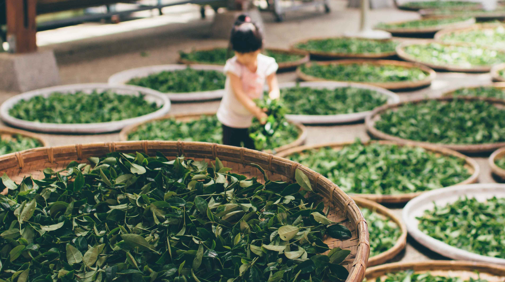
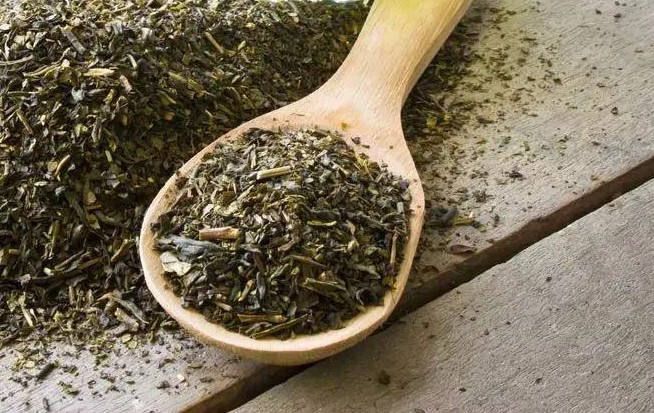
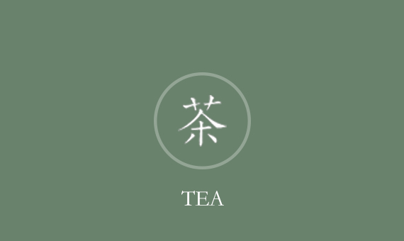
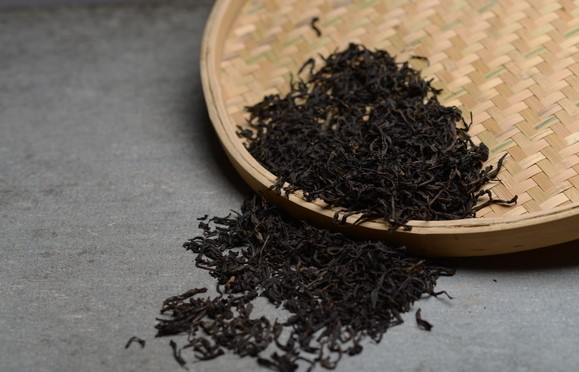
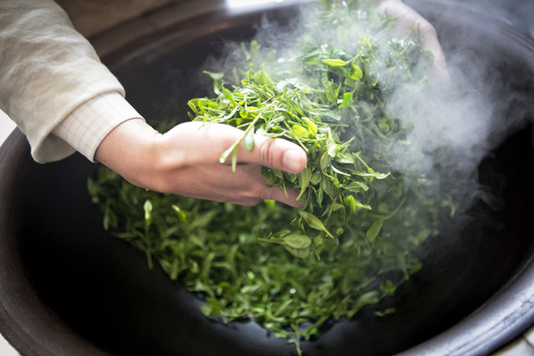

Cha is a beverage originating in China made from the leaves or buds of the Camellia sinensis plant, also generally referring to the leaves of the evergreen shrub Camellia sinensis used to make tea, and beverages made from these leaves
Later, it was extended to all herbal teas made from plant flowers, leaves, and seed roots, such as "Tieguanyin" and so on.
Tea as a noted health drink. It is the contribution of the ancient southern Chinese people to Chinese food culture, and also to the world's food culture.
|  |
pick Pick early, pick tenderly, pick cleanly, Harvested from the vernal equinox to Qingming. |
 |
|
"kill"Qingqi Mainly based on ingredients, stir fry with both hands, Do the cleaning, shake the number, kill evenly, and kill thoroughly. |
 |
Knead Side material, side fry, side knead, As the moisture decreases, cords gradually form. |
|  |
Fried Keep your hands on the tea, keep the tea on the pot, stir fry while kneading Stir-frying with kneading, combined with frying and kneading, continuous operation, ready to serve. |
 |
Tea is the national drink of the Chinese nation. It originated in Shennong, heard about Lu Zhougong, flourished in the Tang Dynasty and flourished in the Song Dynasty, and now it has become one of the three most popular non-alcoholic beverages (tea/cocoa/caffeine) in the world.
The first teas drunk by countries all over the world were directly or indirectly spread from China. China is the birthplace of tea and is known as the "Motherland of Tea". Tea is the pride of the Chinese nation!